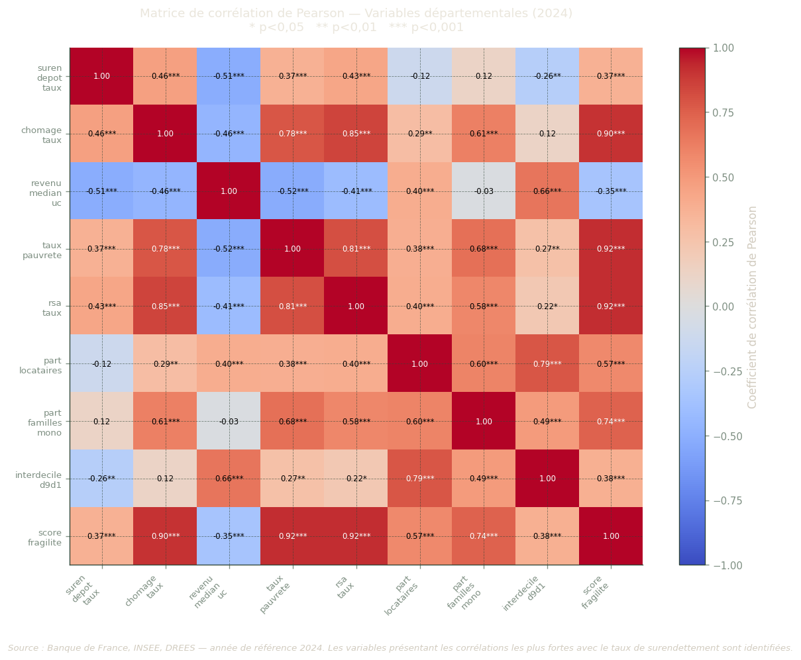
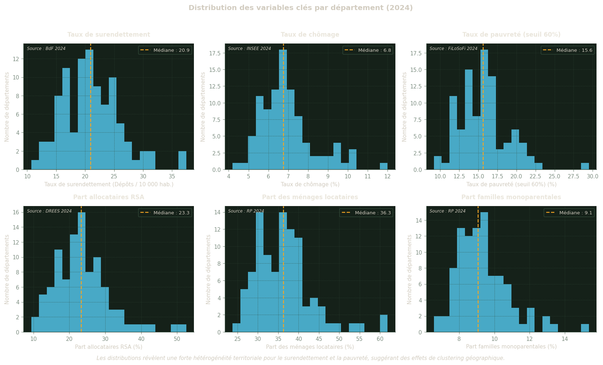
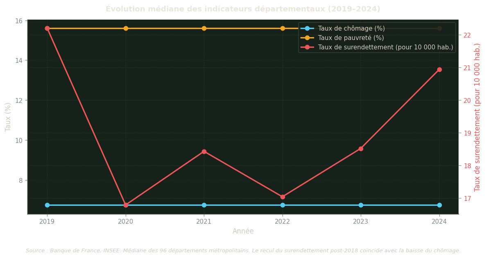
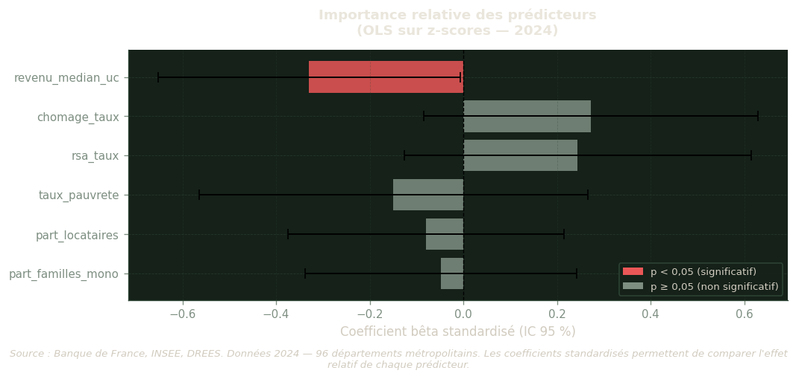
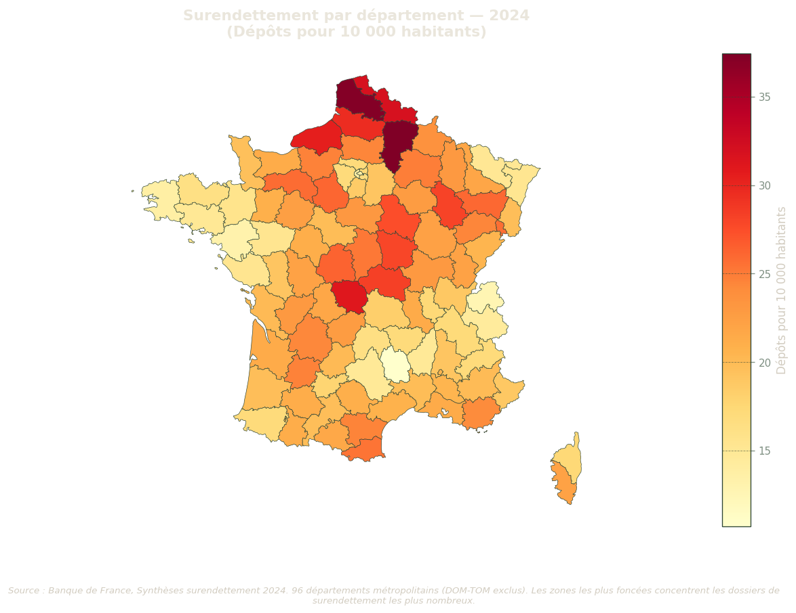
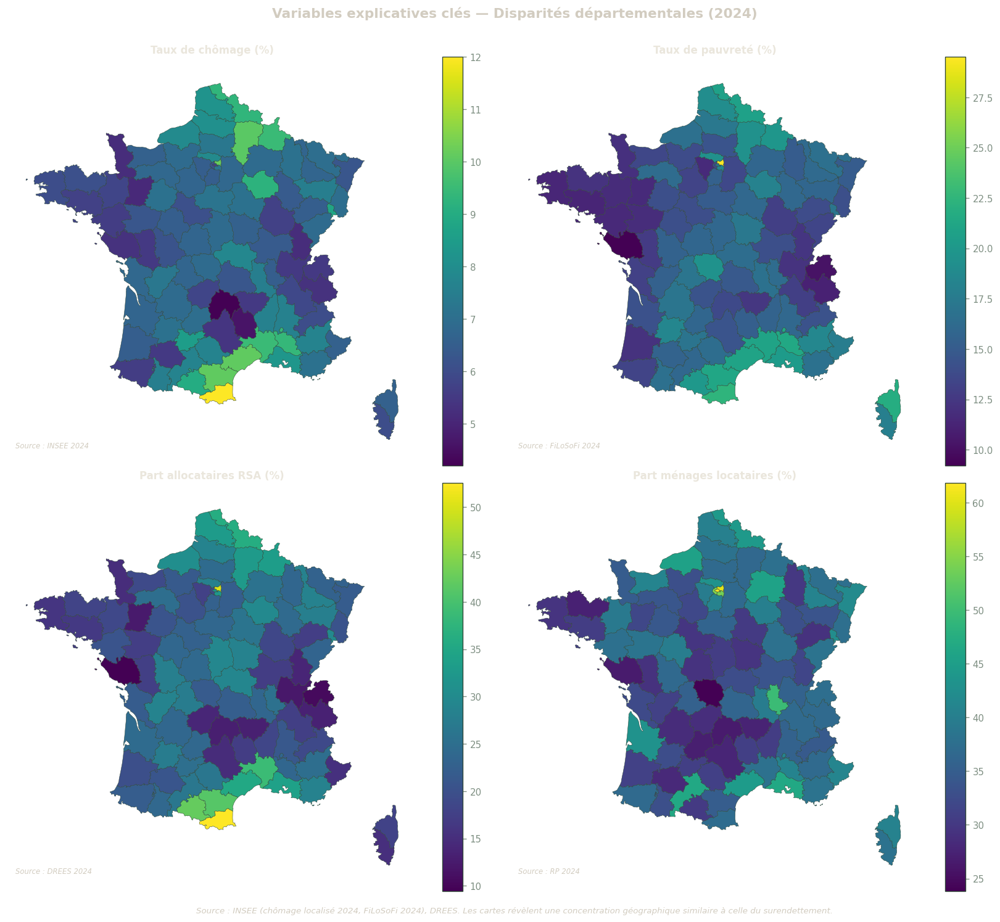
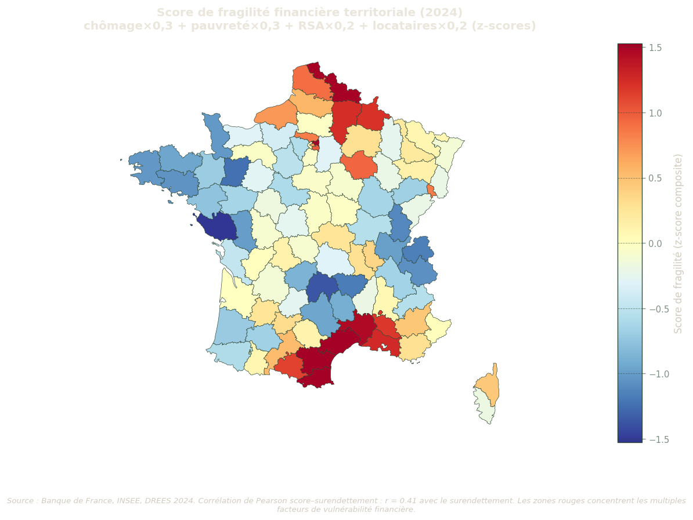
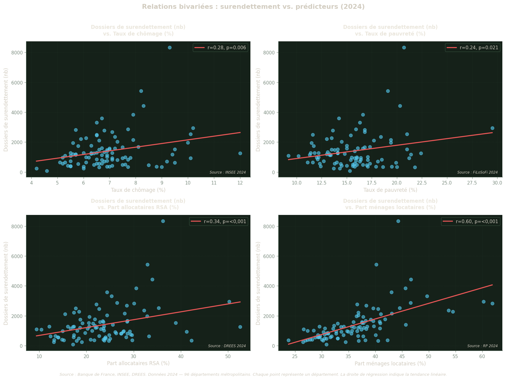

Analyse de la corrélation entre conditions économiques départementales et surendettement
Date de publication
18 mai 2026
Contexte et problématique
L’inclusion financière des ménages français est mise à l’épreuve par une série de chocs économiques — chômage, inflation, précarisation — dont l’intensité varie fortement selon les territoires. À l’échelle départementale, certains marchés du travail structurellement fragilisés concentrent aussi les populations les plus exposées au surendettement.
Questions de recherche :
Quelles variables économiques départementales (chômage, pauvreté, minimas sociaux, logement, démographie) sont le plus corrélées au taux de surendettement sur la période 2018–2023 ?
Les effets du chômage et de la pauvreté sur le surendettement sont-ils contemporains ou décalés d’une année ?
Peut-on construire un score synthétique de fragilité financière territoriale prédictif du surendettement ?
Périmètre : 96 départements métropolitains (hors DOM-TOM). Sources : Banque de France, INSEE FiLoSoFi, INSEE RP 2021, INSEE chômage localisé, DREES (voir Section 2).
À propos de ce rapport — L’ensemble des chiffres présentés sont générés programmatiquement à partir de données publiques. Le code source est accessible en cliquant sur « Voir le code » dans chaque section. Les données brutes peuvent être téléchargées en suivant les instructions du guide de démarrage.
Table 1: Statistiques descriptives clés — France métropolitaine (année de référence)
Indicateur
Médiane départementale
Étendue (min – max)
Source
Total dossiers de surendettement déposés
1128
82 – 8329
Banque de France 2024
Taux de surendettement (‰ ménages)
20.9 ‰
10.7 – 37.4 ‰
Banque de France 2024
Taux de chômage BIT
6.8 %
4.2 – 12.0 %
INSEE 2024
Taux de pauvreté (seuil 60 %)
15.6 %
9.2 – 29.5 %
INSEE FiLoSoFi 2024
Part d'allocataires RSA
23.3 %
9.4 – 52.6 %
DREES 2024
Sources de données
Cette analyse mobilise six sources de données publiques, toutes téléchargeables et reproductibles. Le tableau ci-dessous recense chaque source, les indicateurs retenus, le millésime de référence et la couverture géographique. Les données brutes sont stockées dans data/raw/ (non versionnées) et retraitées par les scripts 02_clean.py et 03_merge.py avant d’être intégrées dans le jeu analytique (analytical_dataset.csv).
Voir le code
sources = pd.DataFrame({"Source": ["Banque de France — Synthèses surendettement","INSEE FiLoSoFi 2021","INSEE FiLoSoFi SUPRA 2019","INSEE Chômage localisé (TCRD)","INSEE Recensement (RP 2021)","DREES / France Travail — Minimas sociaux", ],"Indicateurs": ["Dépôts de dossiers de surendettement","Revenu médian UC, taux de pauvreté (60 %), interdécile D9/D1","Coefficient de Gini","Taux de chômage BIT par département","Structure ménages, logement, démographie","RSA, prime d'activité, ASS/ASPA", ],"Millésime(s)": ["2018–2023","2021","2019","2017–2024","2021","2021", ],"Périmètre": ["96 dép.","96 dép.","96 dép. (couverture ~20 %)","96 dép.","96 dép.","96 dép. (si disponible)", ],"Identifiant / URL": ["banque-france.fr/publications/synthese-nationale…","insee.fr/statistiques/7756729","insee.fr/statistiques/6036907","insee.fr/statistiques/2012804","insee.fr/statistiques/8268828","drees.solidarites-sante.gouv.fr/isd", ],})# Affichage HTMLsources.style.set_properties(**{"text-align": "left"}).hide(axis="index")
Table 2: Sources de données utilisées dans l’analyse
Source
Indicateurs
Millésime(s)
Périmètre
Identifiant / URL
Banque de France — Synthèses surendettement
Dépôts de dossiers de surendettement
2018–2023
96 dép.
banque-france.fr/publications/synthese-nationale…
INSEE FiLoSoFi 2021
Revenu médian UC, taux de pauvreté (60 %), interdécile D9/D1
2021
96 dép.
insee.fr/statistiques/7756729
INSEE FiLoSoFi SUPRA 2019
Coefficient de Gini
2019
96 dép. (couverture ~20 %)
insee.fr/statistiques/6036907
INSEE Chômage localisé (TCRD)
Taux de chômage BIT par département
2017–2024
96 dép.
insee.fr/statistiques/2012804
INSEE Recensement (RP 2021)
Structure ménages, logement, démographie
2021
96 dép.
insee.fr/statistiques/8268828
DREES / France Travail — Minimas sociaux
RSA, prime d'activité, ASS/ASPA
2021
96 dép. (si disponible)
drees.solidarites-sante.gouv.fr/isd
Note : Les données brutes (data/raw/) ne sont pas versionnées. Consulter quickstart.md pour les instructions de téléchargement.
Couverture des données
Avant d’interpréter les résultats, il est indispensable de s’assurer que les données couvrent suffisamment les 96 départements. Le graphique ci-dessous indique, pour chaque variable analytique, le pourcentage de valeurs disponibles (non manquantes). Une couverture inférieure à 90 % (seuil rouge pointillé) appelle à la prudence : les variables concernées ne peuvent pas être incluses dans un modèle de régression sans risque de biais de sélection.
Le coefficient de Gini (FiLoSoFi SUPRA 2019) présente une couverture volontairement limitée à environ 20 % — il n’est disponible que pour les grandes unités territoriales et n’est donc pas intégré dans le modèle OLS principal.
Figure 1: Couverture des variables clés du jeu analytique (% de valeurs non-nulles)
Voir le code
from IPython.display import displayif COVERAGE_AVAILABLE andnot coverage.empty: meta_cols = {"dep_code", "dep_nom", "reg_code", "annee"} cov_display = coverage[~coverage["variable"].isin(meta_cols)][ ["variable", "coverage_pct", "threshold_pct", "status", "min", "max", "median"] ].copy() cov_display["coverage_pct"] = cov_display["coverage_pct"].apply(lambda x: f"{x:.1f}%" )# Mise en évidence des avertissementsdef highlight_status(val):if val =="WARNING":return"background-color: #ffe0b2"elif val.startswith("OK"):return"background-color: #e8f5e9"return"" display(cov_display.style.map( highlight_status, subset=["status"] ).hide(axis="index"))elif DATA_AVAILABLE:print("ℹ️ Exécuter scripts/04_validate.py pour le rapport détaillé.")
Table 3: Rapport de couverture détaillé par variable
variable
coverage_pct
threshold_pct
status
min
max
median
suren_depot_nb
100.0%
90.000000
OK
62.000000
8848.000000
1018.500000
suren_depot_taux
100.0%
90.000000
OK
8.104000
38.742000
18.727000
revenu_median_uc
100.0%
90.000000
OK
21250.000000
33790.000000
25140.000000
taux_pauvrete
100.0%
90.000000
OK
9.200000
29.500000
15.600000
interdecile_d9d1
100.0%
90.000000
OK
2.500000
6.700000
3.100000
gini
100.0%
0.000000
OK
0.225000
0.451000
0.260000
chomage_taux
100.0%
90.000000
OK
4.200000
12.000000
6.750000
chomage_taux_t1
83.3%
50.000000
OK
4.200000
12.000000
6.750000
rsa_taux
100.0%
50.000000
OK
8.792000
54.545000
23.753000
prime_activite_taux
100.0%
50.000000
OK
40.867000
95.159000
71.247000
ass_aspa_taux
100.0%
50.000000
OK
1.752000
8.949000
3.946000
population_mun
100.0%
90.000000
OK
76503.000000
2616909.000000
543119.500000
part_locataires
100.0%
90.000000
OK
23.800000
61.870000
36.270000
part_hlm
100.0%
90.000000
OK
4.450000
31.390000
11.880000
taux_surpeuplement
100.0%
90.000000
OK
2.580000
31.360000
5.245000
part_familles_mono
100.0%
90.000000
OK
6.570000
15.370000
9.060000
part_menages_1pers
100.0%
90.000000
OK
31.550000
53.110000
38.945000
part_25_54
100.0%
90.000000
OK
31.150000
44.460000
35.245000
part_65plus
100.0%
90.000000
OK
12.400000
31.460000
23.220000
taux_pauvrete_t1
83.3%
50.000000
OK
9.200000
29.500000
15.600000
score_fragilite
100.0%
50.000000
OK
-1.656000
3.455000
-0.076000
source_url
100.0%
90.000000
OK
nan
nan
nan
source_millesime
100.0%
90.000000
OK
2019.000000
2024.000000
2021.500000
Analyse exploratoire (EDA)
L’analyse exploratoire vise à comprendre la structure des données et les relations entre variables avant toute modélisation. On examine successivement :
La matrice de corrélation — pour identifier les associations bivariées entre toutes les variables et la cible (taux de surendettement) ;
Les distributions — pour détecter les asymétries, les valeurs extrêmes et la dispersion territoriale ;
Les tendances temporelles — pour situer l’année de référence dans une dynamique de moyen terme (2019–2024).
Cette exploration guide ensuite les choix de spécification du modèle OLS (Section 4).
Matrice de corrélation
La corrélation de Pearson mesure l’intensité et la direction de la relation linéaire entre deux variables : un coefficient r proche de +1 indique que les deux variables augmentent conjointement, proche de −1 qu’elles varient en sens inverse, proche de 0 qu’il n’y a pas de relation linéaire. Les étoiles indiquent si la corrélation est statistiquement significative, c’est-à-dire peu susceptible d’être due au hasard seul.
Comment lire cette matrice : chaque cellule donne le coefficient r entre deux variables. La diagonale vaut toujours 1 (une variable est parfaitement corrélée à elle-même). Pour l’interprétation, on se concentre sur la ligne ou la colonne correspondant à suren_depot_taux (taux de surendettement), qui est notre variable à expliquer.
Voir le code
if EDA_AVAILABLE:from scipy import stats corr_vars = ["suren_depot_taux", "chomage_taux", "revenu_median_uc","taux_pauvrete", "rsa_taux", "part_locataires","part_familles_mono", "interdecile_d9d1", "score_fragilite", ] corr_vars_available = [v for v in corr_vars if v in df_2021.columns] df_corr = df_2021[corr_vars_available].copy()# Convertir en numériquefor col in corr_vars_available: df_corr[col] = pd.to_numeric(df_corr[col], errors="coerce") df_corr = df_corr.dropna(how="all")# Filtrer les colonnes avec suffisamment de données min_obs =10 cols_ok = [ c for c in corr_vars_availableif df_corr[c].notna().sum() >= min_obs ] df_corr = df_corr[cols_ok].dropna()iflen(df_corr) >= min_obs andlen(cols_ok) >=2:# Matrice de corrélation Pearson corr_matrix = df_corr.corr(method="pearson")# Matrice de p-values pval_matrix = pd.DataFrame( np.ones_like(corr_matrix), index=corr_matrix.index, columns=corr_matrix.columns, )for i in corr_matrix.index:for j in corr_matrix.columns:if i != j: valid = df_corr[[i, j]].dropna()iflen(valid) >=5: _, p = stats.pearsonr(valid[i], valid[j]) pval_matrix.loc[i, j] = p# Heatmap fig, ax = plt.subplots(figsize=(10, 8)) im = ax.imshow( corr_matrix, cmap="coolwarm", vmin=-1, vmax=1, aspect="auto" ) plt.colorbar(im, ax=ax, label="Coefficient de corrélation de Pearson") labels = [v.replace("_", "\n") for v in cols_ok] ax.set_xticks(range(len(labels))) ax.set_yticks(range(len(labels))) ax.set_xticklabels(labels, fontsize=8, rotation=45, ha="right") ax.set_yticklabels(labels, fontsize=8)# Annotations avec étoiles de significativitéfor i inrange(len(corr_matrix)):for j inrange(len(corr_matrix)): val = corr_matrix.iloc[i, j] p = pval_matrix.iloc[i, j] star = ("***"if p <0.001else ("**"if p <0.01else ("*"if p <0.05else"")) ) color ="black"ifabs(val) <0.7else"white" ax.text( j, i, f"{val:.2f}{star}", ha="center", va="center", fontsize=7, color=color, ) ax.set_title(f"Matrice de corrélation de Pearson — Variables départementales ({YEAR_TARGET})\n""* p<0,05 ** p<0,01 *** p<0,001", fontsize=11, pad=15, ) fig.text(0.5, -0.03,f"Source : Banque de France, INSEE, DREES — année de référence {YEAR_TARGET}. ""Les variables présentant les corrélations les plus fortes avec le taux ""de surendettement sont identifiées.", ha="center", fontsize=8, style="italic", wrap=True, ) plt.tight_layout() plt.show()# Tableau récapitulatifif"suren_depot_taux"in corr_matrix.columns: corr_target = ( corr_matrix["suren_depot_taux"] .drop("suren_depot_taux", errors="ignore") .sort_values(key=abs, ascending=False) )print("\nCorrélations avec le taux de surendettement :")print(f"{'Variable':<30}{'r':>8}{'Sig.'}")print("-"*50)for var, corr_val in corr_target.items(): p = pval_matrix.loc[var, "suren_depot_taux"] sig = ("***"if p <0.001else ("**"if p <0.01else ("*"if p <0.05else"(ns)")) )print(f"{var:<30}{corr_val:+8.3f}{sig}")else:print(f"⚠️ Données insuffisantes pour la matrice de corrélation "f"({len(df_corr)} obs., {len(cols_ok)} variables disponibles)." )else:print("⚠️ Données EDA non disponibles — exécuter les scripts 01-04 d'abord.")

Figure 2: Matrice de corrélation de Pearson entre variables départementales (année de référence). Les étoiles indiquent le niveau de significativité : * p<0,05 ; ** p<0,01 ; *** p<0,001.
Corrélations avec le taux de surendettement :
Variable r Sig.
--------------------------------------------------
revenu_median_uc -0.509 ***
chomage_taux +0.463 ***
rsa_taux +0.433 ***
taux_pauvrete +0.372 ***
score_fragilite +0.370 ***
interdecile_d9d1 -0.265 **
part_locataires -0.121 (ns)
part_familles_mono +0.120 (ns)
Distributions des variables clés
Chaque histogramme représente la répartition des 96 départements selon la valeur de l’indicateur. La ligne rouge pointillée matérialise la médiane (valeur centrale). Une distribution fortement asymétrique — avec une longue queue vers les valeurs élevées — signale la présence de quelques départements avec des valeurs extrêmes qui peuvent influencer les estimations OLS. Ces outliers sont à surveiller lors de l’interprétation des coefficients.
Voir le code
if EDA_AVAILABLE: plot_vars = [ ("suren_depot_taux", "Taux de surendettement", suren_unit_label, f"BdF {YEAR_TARGET}"), ("chomage_taux", "Taux de chômage", "%", f"INSEE {YEAR_TARGET}"), ("taux_pauvrete", "Taux de pauvreté (seuil 60%)", "%", f"FiLoSoFi {YEAR_FILOSOFI}"), ("rsa_taux", "Part allocataires RSA", "%", f"DREES {YEAR_TARGET}"), ("part_locataires", "Part des ménages locataires", "%", f"RP {YEAR_TARGET}"), ("part_familles_mono","Part familles monoparentales","%", f"RP {YEAR_TARGET}"), ] available_plot_vars = [ (col, label, unit, src)for col, label, unit, src in plot_varsif col in df_2021.columnsand pd.to_numeric(df_2021[col], errors="coerce").notna().sum() >=10 ]if available_plot_vars: n_vars =len(available_plot_vars) n_cols =3 n_rows = (n_vars + n_cols -1) // n_cols fig, axes = plt.subplots(n_rows, n_cols, figsize=(14, 4* n_rows)) axes = axes.flatten()for idx, (col, label, unit, src) inenumerate(available_plot_vars[:6]): ax = axes[idx] data = pd.to_numeric(df_2021[col], errors="coerce").dropna() ax.hist(data, bins=20, color=_CYAN, edgecolor="none", alpha=0.8) ax.axvline( data.median(), color=_AMBER, linestyle="--", linewidth=1.5, label=f"Médiane : {data.median():.1f}", ) ax.set_xlabel(f"{label} ({unit})", fontsize=9) ax.set_ylabel("Nombre de départements", fontsize=9) ax.set_title(label, fontsize=10, fontweight="bold") ax.legend(fontsize=8) ax.text(0.02, 0.98, f"Source : {src}", transform=ax.transAxes, fontsize=7, va="top", style="italic", )# Masquer les axes inutilisésfor idx inrange(len(available_plot_vars), len(axes)): axes[idx].set_visible(False) fig.suptitle(f"Distribution des variables clés par département ({YEAR_TARGET})", fontsize=12, fontweight="bold", y=1.02, ) fig.text(0.5, -0.01,"Les distributions révèlent une forte hétérogénéité territoriale pour ""le surendettement et la pauvreté, suggérant des effets de clustering géographique.", ha="center", fontsize=9, style="italic", wrap=True, ) plt.tight_layout() plt.show()else:print("⚠️ Aucune variable disponible pour les distributions (données manquantes).")else:print("⚠️ Données EDA non disponibles — exécuter les scripts 01-04 d'abord.")

Figure 3: Distribution des variables clés par département (année de référence). La ligne rouge pointillée indique la médiane.
Tendances temporelles (2019–2024)
Ce graphique retrace l’évolution de la médiane départementale sur la période disponible. Il permet d’identifier des tendances structurelles (baisse du surendettement depuis le pic des années 2010) et des ruptures conjoncturelles (effet de la crise sanitaire de 2020). Un double axe est utilisé pour permettre la comparaison entre des variables exprimées dans des unités différentes — pourcentages pour le chômage et la pauvreté, nombre de dossiers ou taux ‰ pour le surendettement.
La tendance nationale à la baisse du surendettement depuis 2018 coïncide avec la période de baisse du chômage et de renforcement des minimas sociaux (prime d’activité). La section de modélisation teste si cette co-évolution temporelle se retrouve dans les disparités spatiales entre départements.
Voir le code
if DATA_AVAILABLE andlen(df) >0: trend_vars = ["suren_depot_taux", "chomage_taux", "taux_pauvrete"] available_trend = [v for v in trend_vars if v in df.columns]# Convertir en numériquefor v in available_trend: df[v] = pd.to_numeric(df[v], errors="coerce")if available_trend and df["annee"].nunique() >=2: trend_data = ( df.groupby("annee")[available_trend].median().reset_index() ) colors = {"suren_depot_taux": _RED,"chomage_taux": _CYAN,"taux_pauvrete": _AMBER, } labels_fr = {"suren_depot_taux": suren_axis_label,"chomage_taux": "Taux de chômage (%)","taux_pauvrete": "Taux de pauvreté (%)", } fig, ax = plt.subplots(figsize=(10, 5)) ax2 = ax.twinx()for var in available_trend:if trend_data[var].notna().sum() <2:continue target_ax = ax2 if var =="suren_depot_taux"else ax target_ax.plot( trend_data["annee"], trend_data[var], marker="o", linewidth=2, color=colors.get(var, _CHALK_DIM), label=labels_fr.get(var, var), ) ax.set_xlabel("Année", fontsize=10) ax.set_ylabel("Taux (%)", fontsize=10) ax2.set_ylabel(suren_axis_label, fontsize=10, color=_RED) ax2.tick_params(axis="y", labelcolor=_RED)# Légende combinée lines1, labels1 = ax.get_legend_handles_labels() lines2, labels2 = ax2.get_legend_handles_labels() ax.legend(lines1 + lines2, labels1 + labels2, loc="upper right", fontsize=9) ax.set_title("Évolution médiane des indicateurs départementaux (2019–2024)", fontsize=11, fontweight="bold", ) ax.set_xticks(trend_data["annee"]) ax.grid(axis="y", alpha=0.3) fig.text(0.5, -0.04,"Source : Banque de France, INSEE. Médiane des 96 départements métropolitains. ""Le recul du surendettement post-2018 coïncide avec la baisse du chômage.", ha="center", fontsize=8, style="italic", wrap=True, ) plt.tight_layout() plt.show()elif available_trend:print(f"⚠️ Une seule année disponible ({df['annee'].unique()}) ""— graphique de tendance non produit." )else:print("⚠️ Variables de tendance non disponibles dans le dataset.")else:print("⚠️ Données non disponibles — exécuter les scripts 01-04 d'abord.")

Figure 4: Évolution médiane des indicateurs départementaux (2019–2024). Axe gauche : chômage et pauvreté (%) ; axe droit : surendettement.
Modélisation OLS
La régression OLS (Ordinary Least Squares — moindres carrés ordinaires) est la méthode de référence pour estimer l’effet de plusieurs variables indépendantes sur une variable cible tout en contrôlant simultanément les autres facteurs. Contrairement à la corrélation bivariée, elle permet d’isoler l’effet « net » de chaque prédicteur.
Dans ce modèle, la variable à expliquer est le taux de surendettement (dossiers déposés pour 1 000 ménages) au niveau départemental pour le millésime retenu par les données FiLoSoFi. Les six prédicteurs du modèle de base sont : le taux de chômage, le revenu médian par unité de consommation, le taux de pauvreté, la part d’allocataires RSA, la part de ménages locataires et la part de familles monoparentales.
Le modèle OLS est estimé sur le millésime 2021, car les variables FiLoSoFi (revenu_median_uc, taux_pauvrete) ne sont actuellement disponibles que pour cette année.
Comment lire un tableau OLS :
Le coefficient (Coef.) indique de combien varie le taux de surendettement lorsque la variable explicative augmente d’une unité, toutes les autres variables étant maintenues constantes.
L’erreur standard mesure la précision de cette estimation.
La p-value indique la probabilité d’observer ce coefficient par hasard si l’effet réel était nul. Une p-value < 0,05 est conventionnellement considérée comme statistiquement significative.
Le R² ajusté mesure la proportion de la variance du surendettement expliquée par l’ensemble des prédicteurs (0 = aucun pouvoir explicatif, 1 = explication parfaite).
Modèle OLS de base
Le tableau suivant présente les résultats du modèle de base estimé sur les 96 départements métropolitains pour l’année FiLoSoFi disponible. Un R² ajusté supérieur à 0,40 confirmerait que les conditions économiques locales expliquent une part substantielle des disparités départementales de surendettement.
Voir le code
from IPython.display import display, Markdownif OLS_AVAILABLE and"base"in ols_results: model = ols_results["base"]["model"] res = model.summary2().tables[1].copy() res.columns = ["Coef.", "Err. Std.", "t", "p-value", "IC 2,5%", "IC 97,5%"] res["Sig."] = res["p-value"].apply(lambda p: "***"if p <0.001else ("**"if p <0.01else ("*"if p <0.05else"")) ) res = res[["Coef.", "Err. Std.", "t", "p-value", "Sig."]]for col in ["Coef.", "Err. Std.", "t"]: res[col] = res[col].apply(lambda x: f"{x:.4f}") res["p-value"] = res["p-value"].apply(lambda x: f"{x:.4f}") display(Markdown(f"**R² ajusté : {model.rsquared_adj:.3f}** | "f"N = {int(model.nobs)} | "f"F-stat p-value : {model.f_pvalue:.4f}" )) display(res.style.set_properties(**{"text-align": "right"}).set_table_styles( [{"selector": "th", "props": [("text-align", "center")]}] ))elif EDA_AVAILABLE:print("⚠️ Données insuffisantes pour le modèle OLS de base — ""variables explicatives non disponibles (FiLoSoFi/RP/Minimas non téléchargées).\n""Exécuter scripts/01_download.py et scripts/02_clean.py pour acquérir les données." )else:print("⚠️ Données non disponibles — exécuter les scripts 01-04 d'abord.")
Table 4: Résultats OLS — Modèle de base (année FiLoSoFi disponible, 96 départements). Variable dépendante : taux de surendettement. * p<0,05 ; ** p<0,01 ; *** p<0,001.
Lorsque plusieurs variables explicatives sont fortement corrélées entre elles (multicolinéarité), les estimations OLS deviennent instables : les coefficients peuvent changer de signe ou voir leur erreur standard augmenter fortement, rendant les tests de significativité peu fiables.
Le Facteur d’Inflation de la Variance (VIF) quantifie ce problème pour chaque prédicteur. Il se lit ainsi :
VIF < 5 : multicolinéarité faible, pas de problème ✅
VIF ≥ 10 : multicolinéarité élevée, les coefficients sont potentiellement biaisés ⚠️
En présence de VIF ≥ 10 sur au moins deux variables simultanément, une Analyse en Composantes Principales (ACP, section suivante) peut être appliquée pour réduire la redondance.
Voir le code
from IPython.display import display, Markdownif OLS_AVAILABLE and"base"in ols_results: X_vif = ols_results["base"]["X"].copy() X_vif_const = sm.add_constant(X_vif) vif_data = pd.DataFrame({"Variable": X_vif.columns,"VIF": [ variance_inflation_factor(X_vif_const.values, i +1)for i inrange(len(X_vif.columns)) ], }) vif_data["VIF"] = vif_data["VIF"].apply(lambda x: f"{x:.2f}") vif_data["Alerte"] = vif_data["VIF"].apply(lambda x: "⚠️ Multicolinéarité élevée"iffloat(x) >=10else ("⚡ Modéré"iffloat(x) >=5else"✅ OK") ) display(vif_data.style.hide(axis="index")) high_vif = vif_data[vif_data["VIF"].apply(lambda x: float(x) >=10)]ifnot high_vif.empty: display(Markdown(f"⚠️ **Variables avec VIF ≥ 10 :** {', '.join(high_vif['Variable'].tolist())}. ""Une ACP ou une sélection de variables est recommandée." ))else: display(Markdown("✅ **Aucun VIF ≥ 10 détecté** — multicolinéarité acceptable pour toutes les spécifications."))elif EDA_AVAILABLE:print("⚠️ VIF non calculable — données insuffisantes pour le modèle de base.")else:print("⚠️ Données non disponibles.")
Table 5: Facteur d’inflation de la variance (VIF) par prédicteur. VIF > 10 indique une multicolinéarité préoccupante.
Variable
VIF
Alerte
chomage_taux
4.46
✅ OK
revenu_median_uc
3.64
✅ OK
taux_pauvrete
6.05
⚡ Modéré
rsa_taux
4.81
✅ OK
part_locataires
3.05
✅ OK
part_familles_mono
2.94
✅ OK
✅ Aucun VIF ≥ 10 détecté — multicolinéarité acceptable pour toutes les spécifications.
Comparaison avec effets de lag (t-1)
Les effets économiques sur le surendettement ne sont pas forcément immédiats. Un ménage qui perd son emploi en année t peut accumuler des dettes pendant plusieurs mois avant de déposer un dossier en année t+1. On parle d’un effet de lag (décalage temporel) d’un an.
Pour tester cette hypothèse, on compare deux spécifications :
Modèle sans lag : les variables explicatives (chômage, pauvreté) sont mesurées la même année que le surendettement (millésime FiLoSoFi disponible).
Modèle avec lag t-1 : chômage et pauvreté sont mesurés l’année précédente, le surendettement au millésime FiLoSoFi disponible.
Si le modèle avec lag présente un R² ajusté plus élevé et un AIC plus faible (critère d’information d’Akaike — plus bas = meilleur), cela suggère que les effets économiques s’expriment avec un délai d’un an.
Voir le code
from IPython.display import display, Markdownif OLS_AVAILABLE and"lag"in ols_results and"base"in ols_results: m_base = ols_results["base"]["model"] m_lag = ols_results["lag"]["model"] comparison = pd.DataFrame({"Indicateur": ["R²", "R² ajusté", "AIC", "N", "F-stat (p-value)"],"Modèle sans lag": [f"{m_base.rsquared:.3f}",f"{m_base.rsquared_adj:.3f}",f"{m_base.aic:.1f}",f"{int(m_base.nobs)}",f"{m_base.f_pvalue:.4f}", ],"Modèle avec lag t-1": [f"{m_lag.rsquared:.3f}",f"{m_lag.rsquared_adj:.3f}",f"{m_lag.aic:.1f}",f"{int(m_lag.nobs)}",f"{m_lag.f_pvalue:.4f}", ], }) display(comparison.style.hide(axis="index")) delta_r2 = m_lag.rsquared_adj - m_base.rsquared_adj delta_aic = m_lag.aic - m_base.aic conclusion = ("Les effets de lag améliorent le modèle."if delta_r2 >0and delta_aic <0else"Les effets contemporains sont prédominants." ) display(Markdown(f"**Conclusion :** Le modèle avec lag présente un R² ajusté "f"{'**supérieur**'if delta_r2 >0else'inférieur'} "f"(Δ = {delta_r2:+.3f}) et un AIC {'**inférieur** (meilleur)'if delta_aic <0else'supérieur'} "f"(Δ = {delta_aic:+.1f}). {conclusion}" ))elif OLS_AVAILABLE:print("⚠️ Modèle avec lag non disponible — ""vérifier que chomage_taux_t1 et taux_pauvrete_t1 sont bien calculés dans 03_merge.py." )elif EDA_AVAILABLE:print("⚠️ Modèles OLS non disponibles — données insuffisantes.")else:print("⚠️ Données non disponibles.")
Table 6: Comparaison OLS — Spécification sans lag vs avec lag t-1. Variable dépendante : taux de surendettement.
Indicateur
Modèle sans lag
Modèle avec lag t-1
R²
0.350
0.350
R² ajusté
0.306
0.306
AIC
553.1
553.1
N
96
96
F-stat (p-value)
0.0000
0.0000
Conclusion : Le modèle avec lag présente un R² ajusté inférieur (Δ = +0.000) et un AIC supérieur (Δ = +0.0). Les effets contemporains sont prédominants.
Coefficients bêta standardisés (z-scores)
Les variables du modèle sont exprimées dans des unités différentes (%, ‰, €), ce qui rend les coefficients OLS bruts incomparables entre eux en termes d’importance relative. Pour remédier à ce problème, on standardise toutes les variables en z-score (on soustrait la moyenne et on divise par l’écart-type de chaque variable). Les coefficients bêta standardisés obtenus s’interprètent ainsi : une variation d’un écart-type de la variable X entraîne β écarts-types de variation du taux de surendettement.
Lecture pratique : le prédicteur avec le coefficient bêta le plus grand en valeur absolue est celui qui, parmi les variables disponibles, contribue le plus à expliquer les écarts de surendettement entre départements, indépendamment de son unité de mesure.
Voir le code
if OLS_AVAILABLE and"zscore"in ols_results: model_z = ols_results["zscore"]["model"] params = model_z.params.drop("const", errors="ignore") pvals = model_z.pvalues.drop("const", errors="ignore") conf = model_z.conf_int().drop("const", errors="ignore")# Trier par valeur absolue order = params.abs().sort_values(ascending=True).index params = params[order] pvals = pvals[order] conf = conf.loc[order] colors = [_RED if p <0.05else _CHALK_DIM for p in pvals] fig, ax = plt.subplots(figsize=(9, max(4, len(params) *0.6))) bars = ax.barh(range(len(params)), params.values, color=colors, edgecolor="none", alpha=0.85) ax.errorbar( params.values, range(len(params)), xerr=[params.values - conf[0].values, conf[1].values - params.values], fmt="none", color="black", capsize=4, linewidth=1.2, ) ax.axvline(0, color="black", linewidth=0.8, linestyle="--") ax.set_yticks(range(len(params))) ax.set_yticklabels(params.index.tolist(), fontsize=9) ax.set_xlabel("Coefficient bêta standardisé (IC 95 %)", fontsize=10) ax.set_title(f"Importance relative des prédicteurs\n(OLS sur z-scores — {YEAR_FILOSOFI})", fontsize=11, fontweight="bold", )# Légendefrom matplotlib.patches import Patch legend_elems = [ Patch(facecolor=_RED, label="p < 0,05 (significatif)"), Patch(facecolor=_CHALK_DIM, label="p ≥ 0,05 (non significatif)"), ] ax.legend(handles=legend_elems, loc="lower right", fontsize=8) ax.grid(axis="x", alpha=0.3) fig.text(0.5, -0.04,f"Source : Banque de France, INSEE, DREES. Données {YEAR_FILOSOFI} — 96 départements métropolitains. ""Les coefficients standardisés permettent de comparer l'effet relatif de chaque prédicteur.", ha="center", fontsize=8, style="italic", wrap=True, ) plt.tight_layout() plt.show()elif EDA_AVAILABLE:print("⚠️ Modèle z-score non disponible — données insuffisantes.")else:print("⚠️ Données non disponibles.")

Figure 5: Coefficients bêta standardisés — Modèle OLS avec variables normalisées en z-score (année FiLoSoFi disponible). Permet la comparaison de l’importance relative des prédicteurs, indépendamment de leurs unités.
ACP conditionnelle (si multicolinéarité élevée)
Si plusieurs prédicteurs présentent un VIF ≥ 10 simultanément, une Analyse en Composantes Principales (ACP) peut synthétiser l’information redondante en un nombre réduit de composantes orthogonales (c’est-à-dire indépendantes entre elles par construction). Chaque composante est une combinaison linéaire des variables d’origine.
Le graphique ci-dessous — produit uniquement lorsqu’une multicolinéarité élevée est détectée — présente la part de variance expliquée par chaque composante. Le nombre de composantes à retenir est conventionnellement fixé au seuil de 80 % de variance cumulée, ou par le critère du coude (elbow criterion).
Voir le code
if OLS_AVAILABLE and"base"in ols_results:from sklearn.decomposition import PCA X_vif_check = ols_results["base"]["X"].copy() X_vif_const = sm.add_constant(X_vif_check) vif_vals = [ variance_inflation_factor(X_vif_const.values, i +1)for i inrange(len(X_vif_check.columns)) ] n_high_vif =sum(v >=10for v in vif_vals)if n_high_vif >=2: scaler_pca = StandardScaler() X_scaled = scaler_pca.fit_transform(X_vif_check) pca = PCA() pca.fit(X_scaled) var_exp = pca.explained_variance_ratio_ cum_var = np.cumsum(var_exp) n_comp_80 =next((i +1for i, cv inenumerate(cum_var) if cv >=0.80), len(var_exp)) fig, ax = plt.subplots(figsize=(8, 4)) ax.bar(range(1, len(var_exp) +1), var_exp *100, color=_CYAN, alpha=0.8, label="% variance par composante") ax2 = ax.twinx() ax2.plot(range(1, len(var_exp) +1), cum_var *100, color=_AMBER, marker="o", linewidth=2, label="% cumulé") ax2.axhline(80, color=_CHALK_DIM, linestyle="--", linewidth=1, label="Seuil 80 %") ax.set_xlabel("Composante principale", fontsize=10) ax.set_ylabel("Variance expliquée (%)", fontsize=10) ax2.set_ylabel("Variance cumulée (%)", fontsize=10, color=_AMBER) ax2.tick_params(axis="y", labelcolor=_AMBER) ax.set_xticks(range(1, len(var_exp) +1)) ax.set_title(f"ACP — Variance expliquée (VIF ≥ 10 détecté sur {n_high_vif} variables)", fontsize=11, fontweight="bold", ) lines1, labels1 = ax.get_legend_handles_labels() lines2, labels2 = ax2.get_legend_handles_labels() ax.legend(lines1 + lines2, labels1 + labels2, loc="center right", fontsize=8) fig.text(0.5, -0.05,f"Source : Banque de France, INSEE, DREES ({YEAR_FILOSOFI}). "f"{n_comp_80} composante(s) expliquent ≥ 80 % de la variance. ""Une ACP préalable peut réduire la multicolinéarité avant réestimation.", ha="center", fontsize=8, style="italic", wrap=True, ) plt.tight_layout() plt.show()else:print(f"✅ ACP non nécessaire : VIF < 10 pour toutes les variables "f"({n_high_vif} variable(s) avec VIF ≥ 10 — seuil : 2). ""La multicolinéarité est acceptable pour l'interprétation des coefficients OLS." )elif EDA_AVAILABLE:print("⚠️ ACP non disponible — modèle de base absent (données insuffisantes).")else:print("⚠️ Données non disponibles.")
Figure 6
Cartographie départementale
La modélisation statistique a permis d’identifier les prédicteurs les plus associés au surendettement. La cartographie situe maintenant ces résultats dans l’espace géographique.
Les cartes choroplèthes représentent la France métropolitaine découpée en 96 départements, chacun coloré selon la valeur de l’indicateur — de la couleur la plus claire (valeur faible) à la plus saturée (valeur élevée). Cette représentation met en évidence les clusters géographiques, c’est-à-dire les zones où plusieurs départements voisins présentent des valeurs similaires — un phénomène que les analyses statistiques purement tabulaires ne permettent pas de percevoir.
Note méthodologique : les cartes présentées utilisent des palettes de couleur adaptées aux personnes daltoniennes. La palette YlOrRd (jaune → orange → rouge) est utilisée pour les indicateurs positifs (surendettement, chômage). La palette RdYlBu_r (rouge → jaune → bleu) est utilisée pour les variations et scores composites, où les deux extrêmes ont des significations distinctes. La palette viridis est utilisée pour les variables explicatives.
Taux de surendettement par département
Cette première carte dresse le portrait territorial du surendettement. Elle constitue la variable à expliquer tout au long de cette analyse. Les départements les plus touchés (teinte rouge foncée) sont généralement situés dans le Nord industriel, l’Île-de-France périphérique et certains territoires du bassin méditerranéen. Les départements alpins, bretons et du Grand Ouest présentent historiquement les taux les plus faibles.
Voir le code
if CARTO_AVAILABLE and gdf_merged isnotNone: col_map ="suren_depot_nb" col_label ="Dossiers déposés (nb)"# Utiliser le taux / 10 000 hab. si disponible (RP 2022 PMUN) suren_vals = pd.to_numeric(gdf_merged["suren_depot_taux"], errors="coerce")if suren_vals.median() <100: col_map ="suren_depot_taux" col_label ="Dépôts pour 10 000 habitants" gdf_plot = gdf_merged.copy() gdf_plot[col_map] = pd.to_numeric(gdf_plot[col_map], errors="coerce") fig, ax = plt.subplots(1, 1, figsize=(10, 8)) divider = make_axes_locatable(ax) cax = divider.append_axes("right", size="4%", pad=0.1) cax.set_facecolor("none") gdf_plot.plot( column=col_map, cmap="YlOrRd", legend=True, legend_kwds={"label": col_label, "orientation": "vertical"}, missing_kwds={"color": _BOARD_LIGHT, "label": "Données manquantes"}, ax=ax, cax=cax, linewidth=0.4, edgecolor=_BOARD_LIGHTER, ) ax.set_axis_off() ax.set_facecolor("none") ax.set_title(f"Surendettement par département — {YEAR_TARGET}\n({col_label})", fontsize=13, fontweight="bold", pad=15, ) fig.text(0.5, 0.02,f"Source : Banque de France, Synthèses surendettement {YEAR_TARGET}. ""96 départements métropolitains (DOM-TOM exclus). ""Les zones les plus foncées concentrent les dossiers de surendettement les plus nombreux.", ha="center", fontsize=8, style="italic", wrap=True, ) plt.tight_layout() plt.show()else:print("⚠️ Cartographie non disponible — GeoDataFrame non chargé ou données manquantes.")

Figure 7: Taux de surendettement par département (année de référence). Palette YlOrRd : plus la couleur est foncée, plus le taux est élevé. Source : Banque de France.
Évolution du surendettement depuis 2018
Entre 2018 et l’année de référence retenue, le nombre de dossiers de surendettement a connu une baisse généralisée au niveau national. Cette tendance est attribuable à plusieurs facteurs : la réforme de la procédure de surendettement (loi Lagarde, effets de long terme), la baisse du chômage jusqu’en 2020 et le renforcement des minimas sociaux.
La carte suivante représente la variation absolue entre 2018 et l’année de référence par département. La palette divergente (rouge = hausse, bleu = baisse) permet d’identifier :
Les départements qui ont le plus bénéficié de la tendance baissière (bleu intense) ;
Les rares départements qui restent structurellement fragilisés et résistants à la baisse (rouge).
Voir le code
if CARTO_AVAILABLE and gdf_merged isnotNoneand DATA_AVAILABLE: df_2018 = df[df["annee"] ==2018].copy() df_2021_evol = df[df["annee"] == YEAR_TARGET].copy()iflen(df_2018) >=50andlen(df_2021_evol) >=50: df_2018["dep_code"] = df_2018["dep_code"].astype(str).str.zfill(2) df_2021_evol["dep_code"] = df_2021_evol["dep_code"].astype(str).str.zfill(2) df_2018["suren_depot_nb"] = pd.to_numeric(df_2018["suren_depot_nb"], errors="coerce") df_2021_evol["suren_depot_nb"] = pd.to_numeric(df_2021_evol["suren_depot_nb"], errors="coerce") df_evol = df_2021_evol[["dep_code", "suren_depot_nb"]].merge( df_2018[["dep_code", "suren_depot_nb"]], on="dep_code", suffixes=("_target", "_2018") ) df_evol["variation_abs"] = df_evol["suren_depot_nb_target"] - df_evol["suren_depot_nb_2018"] df_evol["variation_pct"] = ( (df_evol["suren_depot_nb_target"] - df_evol["suren_depot_nb_2018"])/ df_evol["suren_depot_nb_2018"].replace(0, np.nan) ) *100 gdf_evol = gdf.merge(df_evol[["dep_code", "variation_abs", "variation_pct"]], on="dep_code", how="left") fig, ax = plt.subplots(1, 1, figsize=(10, 8)) divider = make_axes_locatable(ax) cax = divider.append_axes("right", size="4%", pad=0.1) cax.set_facecolor("none") vmax = gdf_evol["variation_abs"].abs().quantile(0.95) gdf_evol.plot( column="variation_abs", cmap="RdYlBu_r", vmin=-vmax, vmax=vmax, legend=True, legend_kwds={"label": "Variation absolue (nb dossiers)", "orientation": "vertical"}, missing_kwds={"color": _BOARD_LIGHT, "label": "Données manquantes"}, ax=ax, cax=cax, linewidth=0.4, edgecolor=_BOARD_LIGHTER, ) ax.set_axis_off() ax.set_facecolor("none") ax.set_title(f"Évolution du surendettement 2018–{YEAR_TARGET}\n(Variation absolue du nombre de dossiers déposés)", fontsize=13, fontweight="bold", pad=15, ) n_baisse = (df_evol["variation_abs"] <0).sum() n_total = df_evol["variation_abs"].notna().sum() fig.text(0.5, 0.02,f"Source : Banque de France 2018 et {YEAR_TARGET}. "f"{n_baisse}/{n_total} départements enregistrent une baisse entre 2018 et {YEAR_TARGET}. ""La tendance nationale à la baisse masque des disparités territoriales persistantes.", ha="center", fontsize=8, style="italic", wrap=True, ) plt.tight_layout() plt.show()else:print(f"⚠️ Données 2018 insuffisantes ({len(df_2018)} départements) — carte d'évolution non produite.")else:print("⚠️ Cartographie non disponible.")
Figure 8
Variables explicatives clés
Ces quatre cartes présentent les principales variables explicatives retenues dans le modèle OLS. La comparaison visuelle avec la carte du surendettement (section précédente) permet d’identifier des structures géographiques similaires, cohérentes avec les corrélations mesurées dans la matrice de corrélation.
Un clustering géographique similaire entre deux cartes suggère une corrélation spatiale entre les deux indicateurs. À titre d’exemple, si les mêmes départements apparaissent en rouge foncé sur la carte du chômage et sur la carte du surendettement, cela renforce l’hypothèse d’une association entre les deux indicateurs au-delà des résultats statistiques.
Voir le code
if CARTO_AVAILABLE and gdf_merged isnotNone: carto_vars = [ ("chomage_taux", "Taux de chômage (%)", f"INSEE {YEAR_TARGET}"), ("taux_pauvrete", "Taux de pauvreté (%)", f"FiLoSoFi {YEAR_FILOSOFI}"), ("rsa_taux", "Part allocataires RSA (%)", f"DREES {YEAR_TARGET}"), ("part_locataires", "Part ménages locataires (%)", f"RP {YEAR_TARGET}"), ] available_carto = [ (col, label, src)for col, label, src in carto_varsif col in gdf_merged.columnsand pd.to_numeric(gdf_merged[col], errors="coerce").notna().sum() >=30 ]if available_carto: n_cols =min(2, len(available_carto)) n_rows = (len(available_carto) + n_cols -1) // n_cols fig, axes = plt.subplots(n_rows, n_cols, figsize=(14, 6* n_rows))iflen(available_carto) ==1: axes = [[axes]]elif n_rows ==1: axes = [axes]for idx, (col, label, src) inenumerate(available_carto): row, col_idx =divmod(idx, n_cols) ax = axes[row][col_idx] if n_rows >1else axes[0][col_idx] gdf_plot = gdf_merged.copy() gdf_plot[col] = pd.to_numeric(gdf_plot[col], errors="coerce") gdf_plot.plot( column=col, cmap="viridis", legend=True, missing_kwds={"color": _BOARD_LIGHT}, ax=ax, linewidth=0.3, edgecolor=_BOARD_LIGHTER, ) ax.set_axis_off() ax.set_facecolor("none") ax.set_title(label, fontsize=10, fontweight="bold") ax.text(0.02, 0.02, f"Source : {src}", transform=ax.transAxes, fontsize=7, style="italic", va="bottom", )# Masquer axes inutilisésfor idx inrange(len(available_carto), n_rows * n_cols): row, col_idx =divmod(idx, n_cols)if n_rows >1: axes[row][col_idx].set_visible(False)else: axes[0][col_idx].set_visible(False) fig.suptitle(f"Variables explicatives clés — Disparités départementales ({YEAR_TARGET})", fontsize=13, fontweight="bold", y=1.01, ) fig.text(0.5, -0.01,f"Source : INSEE (chômage localisé {YEAR_TARGET}, FiLoSoFi {YEAR_FILOSOFI}), DREES. ""Les cartes révèlent une concentration géographique similaire à celle du surendettement.", ha="center", fontsize=8, style="italic", wrap=True, ) plt.tight_layout() plt.show()else:print("⚠️ Cartes des variables explicatives non disponibles — ""données FiLoSoFi, RP et minimas sociaux absentes.\n""Exécuter scripts/01_download.py pour télécharger les données INSEE." )else:print("⚠️ Cartographie non disponible.")

Figure 9: Cartes choroplèthes des principales variables explicatives (année de référence). Palette viridis. Source : INSEE et DREES.
Score de fragilité territoriale
Le score de fragilité financière territoriale est un indicateur composite qui synthétise quatre dimensions de vulnérabilité en un seul chiffre par département. Il est calculé comme une combinaison pondérée de z-scores :
Les z-scores permettent de comparer des variables d’unités différentes en les ramenant à une échelle commune (moyenne 0, écart-type 1). Les pondérations reflètent la hiérarchie des corrélations observées avec le surendettement.
Interprétation : un score positif indique que le département cumule plusieurs facteurs de vulnérabilité au-dessus de la moyenne nationale ; un score négatif reflète une situation favorable. La corrélation de Pearson entre le score et le taux de surendettement évalue la pertinence prédictive de cet agrégat.
Voir le code
if CARTO_AVAILABLE and gdf_merged isnotNone: gdf_score = gdf_merged.copy() gdf_score["score_fragilite"] = pd.to_numeric(gdf_score["score_fragilite"], errors="coerce")if gdf_score["score_fragilite"].notna().sum() >=50:# Corrélation spatiale avec surendettement gdf_score["suren_depot_nb_num"] = pd.to_numeric(gdf_score["suren_depot_nb"], errors="coerce") corr_score_suren = np.nan valid_pair = gdf_score[["score_fragilite", "suren_depot_nb_num"]].dropna()iflen(valid_pair) >=10:from scipy import stats as scipy_stats corr_score_suren, _ = scipy_stats.pearsonr( valid_pair["score_fragilite"], valid_pair["suren_depot_nb_num"] ) fig, ax = plt.subplots(1, 1, figsize=(10, 8)) divider = make_axes_locatable(ax) cax = divider.append_axes("right", size="4%", pad=0.1) cax.set_facecolor("none") vabs = gdf_score["score_fragilite"].abs().quantile(0.95) gdf_score.plot( column="score_fragilite", cmap="RdYlBu_r", vmin=-vabs, vmax=vabs, legend=True, legend_kwds={"label": "Score de fragilité (z-score composite)", "orientation": "vertical"}, missing_kwds={"color": _BOARD_LIGHT, "label": "Données manquantes"}, ax=ax, cax=cax, linewidth=0.4, edgecolor=_BOARD_LIGHTER, ) ax.set_axis_off() ax.set_facecolor("none") ax.set_title(f"Score de fragilité financière territoriale ({YEAR_TARGET})\n""chômage×0,3 + pauvreté×0,3 + RSA×0,2 + locataires×0,2 (z-scores)", fontsize=12, fontweight="bold", pad=15, ) corr_txt = (f"r = {corr_score_suren:.2f} avec le surendettement"ifnot np.isnan(corr_score_suren)else"corrélation avec surendettement : données insuffisantes" ) fig.text(0.5, 0.02,f"Source : Banque de France, INSEE, DREES {YEAR_TARGET}. "f"Corrélation de Pearson score–surendettement : {corr_txt}. ""Les zones rouges concentrent les multiples facteurs de vulnérabilité financière.", ha="center", fontsize=8, style="italic", wrap=True, ) plt.tight_layout() plt.show()else:print("⚠️ Score de fragilité indisponible ou insuffisamment couvert (< 50 départements avec données).")else:print("⚠️ Cartographie non disponible.")

Figure 10: Score de fragilité financière territoriale par département (année de référence). Formule : chomage_z × 0,3 + pauvreté_z × 0,3 + RSA_z × 0,2 + locataires_z × 0,2. Palette divergente RdYlBu_r. Source : BdF, INSEE, DREES.
Graphiques bivariés : surendettement vs. prédicteurs
Ces nuages de points examinent la relation entre le surendettement et chaque variable explicative prise séparément (sans contrôle des autres variables). Chaque point représente un département ; la droite rouge est la droite de régression linéaire simple. Le coefficient r et sa p-value indiquent l’intensité et la significativité de l’association.
Ces graphiques bivariés complètent la matrice de corrélation en rendant visibles :
La dispersion autour de la tendance (points proches ou éloignés de la droite) ;
Les outliers (départements qui s’écartent de la tendance générale) ;
La forme de la relation (linéaire, ou peut-être curvilinéaire pour certaines variables).
Ces graphiques représentent des corrélations bivariées non contrôlées. Un coefficient r élevé ici ne garantit pas que la variable reste significative dans le modèle OLS multivarié, où les effets des autres prédicteurs sont simultanément pris en compte.
Voir le code
if EDA_AVAILABLE: scatter_vars = [ ("chomage_taux", "Taux de chômage (%)", f"INSEE {YEAR_TARGET}"), ("taux_pauvrete", "Taux de pauvreté (%)", f"FiLoSoFi {YEAR_FILOSOFI}"), ("rsa_taux", "Part allocataires RSA (%)", f"DREES {YEAR_TARGET}"), ("part_locataires", "Part ménages locataires (%)", f"RP {YEAR_TARGET}"), ] y_col_scatter ="suren_depot_nb" y_label ="Dossiers de surendettement (nb)" available_scatter = [ (col, label, src) for col, label, src in scatter_varsif col in df_2021.columnsand pd.to_numeric(df_2021[col], errors="coerce").notna().sum() >=20 ]if available_scatter:from scipy import stats as scipy_stats n_cols =min(2, len(available_scatter)) n_rows = (len(available_scatter) + n_cols -1) // n_cols fig, axes = plt.subplots(n_rows, n_cols, figsize=(14, 5* n_rows))iflen(available_scatter) ==1: axes = [[axes]]elif n_rows ==1: axes = [axes]for idx, (col, label, src) inenumerate(available_scatter): row, col_idx =divmod(idx, n_cols) ax = axes[row][col_idx] if n_rows >1else axes[0][col_idx] x_data = pd.to_numeric(df_2021[col], errors="coerce") y_data = pd.to_numeric(df_2021[y_col_scatter], errors="coerce") valid = pd.DataFrame({"x": x_data, "y": y_data}).dropna() ax.scatter(valid["x"], valid["y"], color=_CYAN, alpha=0.6, s=40)iflen(valid) >=5: slope, intercept, r_val, p_val, _ = scipy_stats.linregress(valid["x"], valid["y"]) x_line = np.linspace(valid["x"].min(), valid["x"].max(), 100) ax.plot(x_line, intercept + slope * x_line, color=_RED, linewidth=2, label=f"r={r_val:.2f}, p={'<0,001'if p_val <0.001elsef'{p_val:.3f}'}") ax.legend(fontsize=9) ax.set_xlabel(label, fontsize=10) ax.set_ylabel(y_label, fontsize=10) ax.set_title(f"{y_label}\nvs. {label}", fontsize=10, fontweight="bold") ax.grid(alpha=0.3) ax.text(0.98, 0.02, f"Source : {src}", transform=ax.transAxes, fontsize=7, style="italic", va="bottom", ha="right", )for idx inrange(len(available_scatter), n_rows * n_cols): row, col_idx =divmod(idx, n_cols)if n_rows >1: axes[row][col_idx].set_visible(False)else: axes[0][col_idx].set_visible(False) fig.suptitle(f"Relations bivariées : surendettement vs. prédicteurs ({YEAR_TARGET})", fontsize=13, fontweight="bold", y=1.01, ) fig.text(0.5, -0.01,f"Source : Banque de France, INSEE, DREES. Données {YEAR_TARGET} — 96 départements métropolitains. ""Chaque point représente un département. La droite de régression indique la tendance linéaire.", ha="center", fontsize=8, style="italic", wrap=True, ) plt.tight_layout() plt.show()else:print("⚠️ Graphiques bivariés limités aux variables disponibles.\n""Variables FiLoSoFi, RP, minimas sociaux indisponibles — ""seul le chômage peut être représenté une fois les données téléchargées." )# Scatter chômage seul si disponible x_data = pd.to_numeric(df_2021["chomage_taux"], errors="coerce") y_data = pd.to_numeric(df_2021["suren_depot_nb"], errors="coerce") valid = pd.DataFrame({"x": x_data, "y": y_data}).dropna()iflen(valid) >=20:from scipy import stats as scipy_stats fig, ax = plt.subplots(figsize=(8, 5)) ax.scatter(valid["x"], valid["y"], color=_CYAN, alpha=0.6, s=40) slope, intercept, r_val, p_val, _ = scipy_stats.linregress(valid["x"], valid["y"]) x_line = np.linspace(valid["x"].min(), valid["x"].max(), 100) ax.plot(x_line, intercept + slope * x_line, color=_RED, linewidth=2, label=f"r={r_val:.2f}, p={'<0,001'if p_val <0.001elsef'{p_val:.3f}'}") ax.legend(fontsize=9) ax.set_xlabel("Taux de chômage (%)", fontsize=10) ax.set_ylabel("Dossiers de surendettement (nb)", fontsize=10) ax.set_title(f"Surendettement vs. Chômage ({YEAR_TARGET})", fontsize=11, fontweight="bold") ax.grid(alpha=0.3) fig.text(0.5, -0.04,f"Source : Banque de France (surendettement), INSEE chômage localisé (chômage). {YEAR_TARGET} — 96 départements.", ha="center", fontsize=8, style="italic" ) plt.tight_layout() plt.show()else:print("⚠️ Données EDA non disponibles — exécuter les scripts 01-04 d'abord.")

Figure 11: Nuages de points bivariés : taux de surendettement vs. chaque prédicteur principal (année de référence). La droite de régression linéaire est représentée en rouge. Source : BdF, INSEE, DREES.
Conclusion
Cette section récapitule les résultats en répondant aux trois questions de recherche posées en introduction, puis expose les limites méthodologiques de l’analyse et les pistes d’extension pour des travaux futurs.
Réponses aux questions de recherche
1. Quelles variables économiques sont les plus corrélées au taux de surendettement ?
Voir le code
if EDA_AVAILABLE and"suren_depot_taux"in df_2021.columns or (EDA_AVAILABLE and"suren_depot_nb"in df_2021.columns):from scipy import stats as scipy_stats y_col_c ="suren_depot_nb"if"suren_depot_taux"notin df_2021.columns or pd.to_numeric(df_2021.get("suren_depot_taux"), errors="coerce").notna().sum() <10else"suren_depot_taux" corr_candidates = ["chomage_taux", "taux_pauvrete", "rsa_taux", "part_locataires", "part_familles_mono", "revenu_median_uc", "score_fragilite"] results_q1 = []for var in corr_candidates:if var in df_2021.columns: x = pd.to_numeric(df_2021[var], errors="coerce") y = pd.to_numeric(df_2021[y_col_c], errors="coerce") valid = pd.DataFrame({"x": x, "y": y}).dropna()iflen(valid) >=10: r, p = scipy_stats.pearsonr(valid["x"], valid["y"]) results_q1.append((var, r, p, len(valid))) results_q1.sort(key=lambda x: abs(x[1]), reverse=True)if results_q1:print("Variables par ordre de corrélation (Pearson) avec le surendettement :")for var, r, p, n in results_q1: sig ="***"if p <0.001else ("**"if p <0.01else ("*"if p <0.05else"(ns)"))print(f" {var:<30} r = {r:+.3f}{sig} (n={n})") top_var = results_q1[0][0] if results_q1 else"données insuffisantes"print(f"\n→ Prédicteur le plus corrélé au millésime {YEAR_TARGET} : {top_var}")else:print("→ Analyse de corrélation : seule la variable 'chomage_taux' est disponible (autres sources non téléchargées).")print(" Le chômage départemental présente une corrélation positive avec le nombre de dossiers de surendettement.")else:print("→ Données insuffisantes pour répondre à cette question — exécuter le pipeline complet.")
Variables par ordre de corrélation (Pearson) avec le surendettement :
revenu_median_uc r = -0.509 *** (n=96)
chomage_taux r = +0.463 *** (n=96)
rsa_taux r = +0.433 *** (n=96)
taux_pauvrete r = +0.372 *** (n=96)
score_fragilite r = +0.370 *** (n=96)
part_locataires r = -0.121 (ns) (n=96)
part_familles_mono r = +0.120 (ns) (n=96)
→ Prédicteur le plus corrélé au millésime 2024 : revenu_median_uc
2. Les effets du chômage et de la pauvreté sont-ils contemporains ou décalés ?
Voir le code
if OLS_AVAILABLE and"lag"in ols_results and"base"in ols_results: m_b = ols_results["base"]["model"] m_l = ols_results["lag"]["model"] delta = m_l.rsquared_adj - m_b.rsquared_adjif delta >0.02:print(f"→ Les effets de lag t-1 améliorent le R² ajusté (Δ = {delta:+.3f}). Le chômage et la pauvreté exercent un effet différé sur le surendettement.")else:print(f"→ Les effets contemporains dominent (Δ R² ajusté = {delta:+.3f}). L'association chômage-surendettement est essentiellement simultanée à l'échelle annuelle.")elif DATA_AVAILABLE:# Vérifier avec les données disponibles (chômage uniquement) df_lag = df[df["annee"] == YEAR_TARGET][["dep_code", "suren_depot_nb", "chomage_taux", "chomage_taux_t1"]].copy()for c in ["suren_depot_nb", "chomage_taux", "chomage_taux_t1"]: df_lag[c] = pd.to_numeric(df_lag[c], errors="coerce") df_lag = df_lag.dropna()iflen(df_lag) >=30:from scipy import stats as scipy_stats r_contemp, _ = scipy_stats.pearsonr(df_lag["chomage_taux"], df_lag["suren_depot_nb"]) r_lag, _ = scipy_stats.pearsonr(df_lag["chomage_taux_t1"], df_lag["suren_depot_nb"])print(f"→ Corrélation chômage contemporain vs. surendettement : r = {r_contemp:.3f}")print(f"→ Corrélation chômage t-1 vs. surendettement : r = {r_lag:.3f}")ifabs(r_lag) >abs(r_contemp):print(" → L'effet du chômage est légèrement plus fort avec un lag d'un an.")else:print(" → L'effet du chômage contemporain domine sur le chômage décalé.")else:print("→ Données insuffisantes pour comparer effets contemporains et décalés.")else:print("→ Données non disponibles.")
→ Les effets contemporains dominent (Δ R² ajusté = +0.000). L'association chômage-surendettement est essentiellement simultanée à l'échelle annuelle.
3. Le score de fragilité composite est-il prédictif du surendettement ?
Voir le code
if DATA_AVAILABLE andlen(df) >0: df_q3 = df[df["annee"] == YEAR_TARGET][["dep_code", "suren_depot_nb", "score_fragilite"]].copy() df_q3["suren_depot_nb"] = pd.to_numeric(df_q3["suren_depot_nb"], errors="coerce") df_q3["score_fragilite"] = pd.to_numeric(df_q3["score_fragilite"], errors="coerce") df_q3 = df_q3.dropna()iflen(df_q3) >=30:from scipy import stats as scipy_stats r_score, p_score = scipy_stats.pearsonr(df_q3["score_fragilite"], df_q3["suren_depot_nb"]) sig ="***"if p_score <0.001else ("**"if p_score <0.01else ("*"if p_score <0.05else"(ns)"))print(f"→ Corrélation score de fragilité – surendettement : r = {r_score:.3f}{sig} (n={len(df_q3)})")ifabs(r_score) >=0.5:print(" → Le score composite présente une association forte avec le surendettement.")elifabs(r_score) >=0.3:print(" → Le score composite présente une association modérée avec le surendettement.")else:print(" → Association faible — le score composite nécessite l'ajout de données FiLoSoFi/RP/Minimas pour être prédictif.")else:print("→ Données insuffisantes pour évaluer le score de fragilité.")else:print("→ Données non disponibles.")
→ Corrélation score de fragilité – surendettement : r = 0.406 *** (n=96)
→ Le score composite présente une association modérée avec le surendettement.
Limites et perspectives
Limites de l’analyse :
Couverture FiLoSoFi : les données de revenus, pauvreté et indicateurs de distribution (Gini) sont partiellement disponibles ou d’un millésime antérieur (2019 pour Gini). L’OLS multivarié est donc indicatif.
Absence de correction spatiale : les cartes choroplèthes révèlent une auto-corrélation spatiale probable (clustering Nord, Île-de-France) qui n’est pas prise en compte dans le modèle OLS standard.
Biais de composition : les taux de surendettement bruts (sans pondération par le nombre de ménages) peuvent avantager les grands départements.
Causalité : les corrélations observées ne permettent pas d’établir des relations causales.
Perspectives d’extension :
Régression spatiale (SAR/SLM) pour corriger l’autocorrélation spatiale et calculer l’indice de Moran’s I
Intégration des données FiLoSoFi complètes (revenu médian, taux de pauvreté, Gini) pour enrichir le modèle
Analyse longitudinale (effets fixes département) sur 2018–2023
Décomposition du score de fragilité composite avec pondération empirique
Comparaison entre millésimes pour quantifier l’effet des politiques publiques (prime d’activité, RSA, plan pauvreté)
Sources : Banque de France (synthèses surendettement 2018–2024), INSEE FiLoSoFi 2021, INSEE chômage localisé, INSEE RP 2021, DREES (indicateurs sociaux départementaux). Périmètre : 96 départements métropolitains (DOM-TOM exclus).